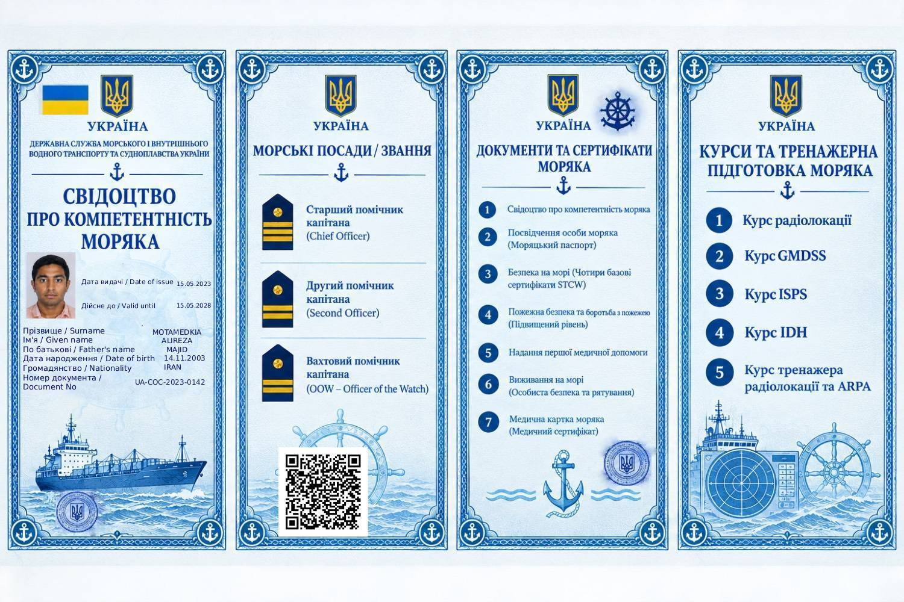

✓ Документ зареєстровано
Прізвище / Surname
MOTAMEDKIA
Ім'я / Given name
ALIREZA
По батькові / Father's name
MAJID
Дата народження / Date of birth
14.11.2003
Громадянство / Nationality
IRAN
Номер документа / Document No.
UA-COC-2023-0142
Дата видачі / Date of issue
15.05.2023
Дійсне до / Valid until
15.05.2028